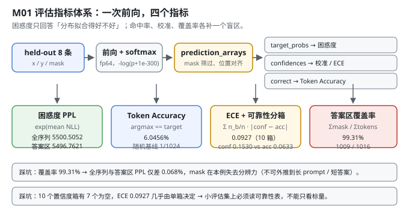
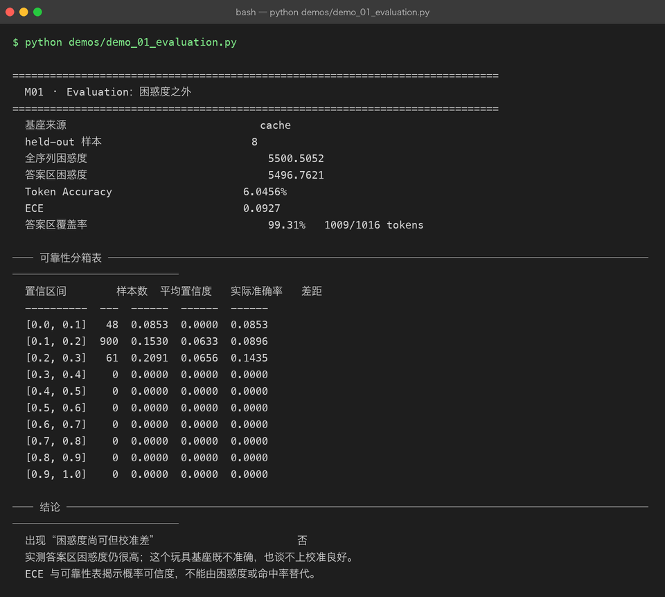

Milestone 01 — Evaluation：困惑度之外
Project 08 的最后一章用「域内困惑度 3,649.9 → 421.1」回答了"模型有没有变好"。但那个答案只有一个数字，而一个数字撑不起"上线"这个决定。
P09 的第一层先把指标体系建起来。除了困惑度，我还要能回答三件事：
- 这个困惑度到底在测什么？ 全序列还是答案区？—— 取决于 mask 覆盖了多少 token。
- 模型真的"说对了"吗？ 困惑度是分布拟合程度，
argmax命没命中是另一回事。 - 它给出的概率可信吗？ 一个说"我有 15% 把握"的模型，实际命中率是多少？—— 这是校准（calibration），困惑度里完全看不出来。
纯 numpy 手写：不走 P06 的 autograd，直接 numpy 算 softmax / log-softmax（src/ie/metrics.py:42）。评估不需要建图，也避免和训练时的实现互相干扰 —— 这条和 P08 M09 是同一个决定。
1. Why：为什么困惑度不够
困惑度 ppl = exp(平均交叉熵) 描述的是"模型对下一个 token 的分布拟合得有多好"。它有三个结构性盲区：
| 盲区 | 例子 | 补它的指标 |
|---|---|---|
| 不知道在测什么 | mask 覆盖了 99.31% 的 token 时，"全序列 PPL" 和 "答案区 PPL" 几乎没区别 | 答案区覆盖率 |
| 不反映离散命中 | 分布拟合得很好，但 argmax 每次都差一个 token | Token Accuracy |
| 不反映概率可信度 | 预测分布很"平"，PPL 很低，但模型自己也不信自己 | ECE + 可靠性分箱表 |
第三条最容易被忽略，也最危险：如果你要用 temperature=0 之外的采样策略，或者要用置信度做路由/拒答，一个未校准的概率分布就是错的输入。
还有一条不可商榷：数值稳定。-log(p) 在 p=0 时会得到 inf。本项目统一用 -log(p + 1e-300)（src/ie/metrics.py:87），并在 fp64 下计算 —— 否则 1e-300 会在 float32 里直接下溢成 0。
2. Design：一次前向，四个指标
关键是只做一次前向，把所有指标需要的中间量一次性收集齐：
prediction_arrays(model, examples) -> {
"target_probs": 目标 token 上的概率, # -> 困惑度
"confidences": max(softmax) 每位置的最大值, # -> 校准
"correct": argmax == target 的 0/1 标记, # -> Token Accuracy
}三个数组都被 mask 筛过（selected = mask.reshape(-1) > 0.5），所以它们长度一致、位置对齐 —— 配对比较才成立。
四个指标：
| 指标 | 定义 | 回答什么 | ||
|---|---|---|---|---|
perplexity | exp(mean(-log p_target)) | 分布拟合好不好 | ||
token_accuracy | mean(argmax == target) | 贪心解码能不能命中 | ||
ece | `Σ (n_bin/n) · \ | avg_conf − accuracy\ | `（10 个等宽置信度箱） | 概率值能不能当概率用 |
answer_coverage | Σ mask / Σ tokens | 上面的 PPL 到底测的是哪一段 |
use_mask=False 时 mask 全填 1，就退化成"全序列困惑度" —— 用同一个函数、同一批数据，只翻转一个开关，两者的差才可比。

3. Real-run evidence（来自 demos/out/demo_01_evaluation_terminal.txt）
真实环境：Python 3.13.12 | numpy 2.5.3。基座来自 P08 的 cache（d_model=64 / n_heads=4 / n_layers=2 / vocab=1024），评估集是 held-out 8 条（与训练集 instruction 交集为 0）。batch_size=2。
基座来源 cache
held-out 样本 8
全序列困惑度 5500.5052
答案区困惑度 5496.7621
Token Accuracy 6.0456%
ECE 0.0927
答案区覆盖率 99.31% 1009/1016 tokens可靠性分箱表（实测）：
置信区间 样本数 平均置信度 实际准确率 差距
---------- --- ------ ------ ------
[0.0, 0.1] 48 0.0853 0.0000 0.0853
[0.1, 0.2] 900 0.1530 0.0633 0.0896
[0.2, 0.3] 61 0.2091 0.0656 0.1435
[0.3, 0.4] 0 0.0000 0.0000 0.0000
[0.4, 0.5] 0 ...（后面 7 箱全空）四个读数：
- 全序列 5500.5052 vs 答案区 5496.7621，只差 0.068%。原因就写在下一行：覆盖率 99.31%（1009/1016） —— 这个玩具 SFT 样本几乎整条序列都是答案区，mask 基本没起到"切出答案"的作用。这个结论不能外推到真实场景（真实 prompt 长、答案短时，两者会差很多）。
- Token Accuracy 6.0456%。词表 1024，随机猜是 0.098%；模型比随机好 62 倍，但绝对水平仍然是"几乎说不对"。注意它和 PPL 5496 不是同一件事：PPL 衡量整个分布，Token Acc 只看法一票。
- ECE 0.0927。900/1016 个位置挤在
[0.1, 0.2]这一箱，平均置信度 0.1530、实际准确率 0.0633 —— 模型说自己有 15.3% 把握，实际只对了 6.3%，系统性过度自信。 - 10 个箱里 7 个是空的。模型输出的最高置信度只到 0.3 出头 —— 这是一个"从来不确定"的模型，它的问题不是自信过头，而是根本没有能把分布压尖的能力。
demo 里的判定是"未出现困惑度尚可但校准差"（因为判定条件是 token_accuracy > 0 and ece > 0.10，ECE 0.0927 差 0.0073 没越过阈值），但结论行写得很清楚：
实测答案区困惑度仍很高；这个玩具基座既不准确，也谈不上校准良好。
ECE 与可靠性表揭示概率可信度，不能由困惑度或命中率替代。
4. 踩坑 / 反直觉发现
4.1 「全序列 PPL ≈ 答案区 PPL」是数据特性，不是指标失效（实测差 0.068%）
两个数只差 3.74（0.068%），看起来像"mask 写错了"。核对 answer_coverage 才发现是数据本身：答案区覆盖了 99.31% 的 token，切不切都一样。
可迁移的规则：报 PPL 之前必须先报覆盖率。如果 mask 错了（全 1 或全 0），你的 PPL 就是在测 prompt，数字照样很漂亮。本项目把覆盖率塞进 evaluate() 的返回值（src/ie/metrics.py:187），就是为了让两者永远同时出现。
4.2 ECE 对分箱粒度敏感，而本例的分箱已经退化
1016 个位置里有 900 个落在同一箱，剩下 116 个分到两箱，7 个箱完全空。这意味着 0.0927 这个数几乎完全由 [0.1, 0.2] 那一箱决定 —— 它更接近"整体偏差"而不是"分箱的加权平均"。
诚实结论：ECE 只有在样本量足够、各箱都有数据时才有分辨力。小评估集上（本项目 1009 个 token）要看可靠性表本身，不能只盯着 ECE 这一个标量。空箱在表里显示为 0 / 0.0000 / 0.0000，这是刻意的 —— 让"没有数据"这件事可见，而不是被平均掉。
4.3 阈值判定会"擦边"，别把它当成物理定律
demo 里 misleading = token_accuracy > 0 and ece > 0.10。实测 ECE 0.0927，差 0.0073 就没被判成"校准差"，但可靠性表明明白白写着过度自信 2.4 倍（0.1530 vs 0.0633）。
这是本项目第一次、但不是最后一次遇到"二元判定 + 擦边数值"的陷阱。处理方式：二元判定只用来触发一行结论文字，真正的判断依据仍然是人读表。P08 M09 的"遗忘判定容忍度 ±10%"是同样的思路 —— 机械阈值给提示，判断留给读表的人。
4.4 -log(p) 的下溢：为什么是 1e-300 而不是 1e-12
一个"几乎不可能"的 token，fp64 下 p 可能是 1e-320（次正规数），再小就真的下溢成 0 了。+1e-300 把 -log 的结果封顶在约 690，而不是 inf。
为什么不用 1e-12：那会给 PPL 一个人为的天花板（1e12），把"模型极度不确定"伪装成"模型很确定地错了"。1e-300 的选择标准是"足够小，不改变任何真实概率的对数值；又足够大，拦住下溢"。
5. Conclusion
- 一次前向、三个对齐数组（target_probs / confidences / correct），是四个指标可交叉验证的前提 —— 它们都被同一个 mask 筛过。
- 困惑度 / Token Accuracy / ECE 是三个正交的问题：拟合、命中、可信度。实测 PPL 5496.76、Token Acc 6.0456%、ECE 0.0927 —— 三个数字讲的是三件事。
- 覆盖率 99.31% 让"全序列 vs 答案区"在本项目上失去分辨力（差 0.068%）。报 PPL 必须同时报覆盖率。
- 实测过度自信：
[0.1, 0.2]箱里平均置信度 0.1530、实际准确率 0.0633，差 0.0896；10 个箱有 7 个空 —— 模型从来不确定。 - 二元阈值判定会擦边（ECE 0.0927 vs 阈值 0.10），判定文字只是提示，判断依据是可读的可靠性表。
- 手写实现的意义：因为 softmax、分箱、加权平均都是自己写的，你才知道 ECE 到底在平均什么、空箱是怎么处理的 —— 用
sklearn.calibration只能拿到一个黑盒浮点数。
6. Code map
| 文件 | 职责 |
|---|---|
src/ie/metrics.py | prediction_arrays（一次前向产出三个对齐数组）/ perplexity / answer_perplexity / token_accuracy / reliability_bins / expected_calibration_error / answer_coverage / evaluate（一次拿全）/ metrics_from_logits（不依赖模型对象） |
src/ie/evalset.py | 提供 held-out 8 条与 build_sft_examples 的 mask（答案区标记的来源） |
src/ie/paths.py | ensure_deps_importable()：校验 P06/P08 只读依赖并启用确定性 autograd |
demos/demo_01_evaluation.py | 3 节：指标总览 / 可靠性分箱表 / 结论判定 |
demos/out/demo_01_evaluation_terminal.txt | 本章所有数字的来源 |
assets/evaluation.svg | 本章评估指标体系图 |
7. Version line
v0.0 → v0.1，M01 评估指标体系落地。实测（held_out=8，1016 token）：全序列 PPL 5500.5052、答案区 PPL 5496.7621、Token Accuracy 6.0456%、ECE 0.0927、答案区覆盖率 99.31%（1009/1016）；可靠性表显示 [0.1,0.2] 箱 900 个样本、平均置信度 0.1530 vs 实际准确率 0.0633，10 箱中 7 箱为空。并诚实记录「覆盖率 99.31% 使全序列/答案区 PPL 仅差 0.068%，本例不可外推」与「ECE 0.0927 擦边未过 0.10 阈值，判定文字不等于结论」。纯 numpy、无 torch/sklearn。配图 1 张手写 SVG + 1 张真实终端截图。